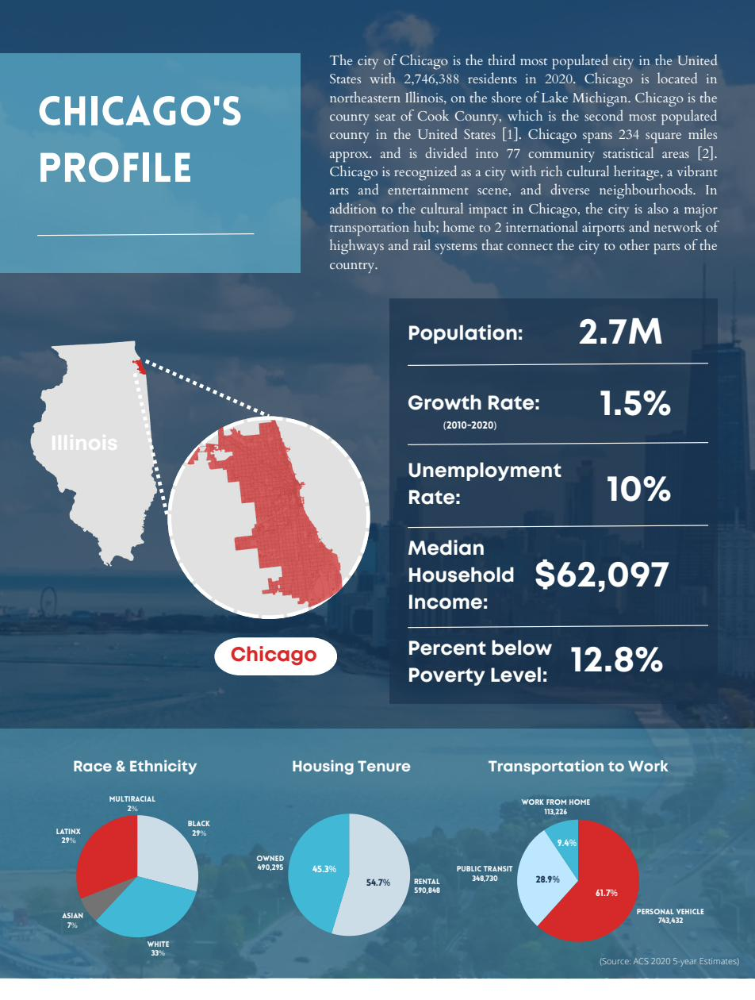

Overview
This environmental action plan sets out a long-term sustainability framework for the City of Chicago, structured around six interconnected focus areas: energy, air and climate, water, biodiversity, agriculture, and waste management. The plan opens with a full city profile covering demographic data, housing tenure, transportation patterns, and baseline environmental conditions, then moves into sector-specific goals, strategies, and policy actions for each area.
The plan's central equity argument runs throughout: environmental burdens in Chicago fall disproportionately on Black, Latino, and low-income communities, and climate resilience efforts need to be designed to close those gaps. Each sector section follows a consistent goal-strategy-action structure, drawing on Chicago's existing climate plans, energy benchmarking data, and the "We Will Chicago" comprehensive plan to anchor recommendations in real policy context.
Equity thread
The plan's 20-year vision centres environmental justice across all six sectors, from clean energy tax districts in underserved neighbourhoods to urban agriculture incentive zones in food desert areas. Toronto's Eco-Roof Incentive Program is referenced as a model for green roof policy, a sign that Canadian cities are already doing some of this work.

Chicago city profile: demographics, housing tenure, and transportation to work. The plan opens with a full baseline profile before moving into sector-specific goals and strategies.
View full plan
What the plan covers
City profile with demographic, economic, housing, and transportation data drawn from 2020 ACS 5-year estimates and Chicago municipal reports
Energy: goals to reach 50% renewable energy in 10 years, with strategies including mandatory microgrids for large residential buildings and Clean Energy Tax Districts for low-income areas
Air and climate: goals to reduce particulate matter and ozone-forming emissions by 50%, backed by strengthened industrial emissions ordinances and a 250,000-tree urban canopy initiative
Water: goals addressing stormwater quality and affordability for low-income households, with strategies including green roof requirements for commercial development and a residential rainwater harvesting rebate program
Biodiversity: goals for new protected areas and native plantings, supported by a Chicago Biodiversity Monitoring Program building on Lincoln Park Zoo wildlife research
Agriculture: goals targeting food desert conditions and urban farming barriers, with strategies including revising the Urban Agriculture Zoning Ordinance and establishing Urban Agriculture Incentive Zones modelled on California programs
Waste management: goals for a 50% increase in residential recycling and 75% diversion of demolition materials from landfills, with a material exchange incentive program and incinerator site analysis framework
Methods & tools
Environmental action planningClimate policyEquity-centred planningStormwater managementUrban agriculture policyEnergy planningBiodiversity & green infrastructureMunicipal policy analysisCity profilingGoal-strategy-action frameworks